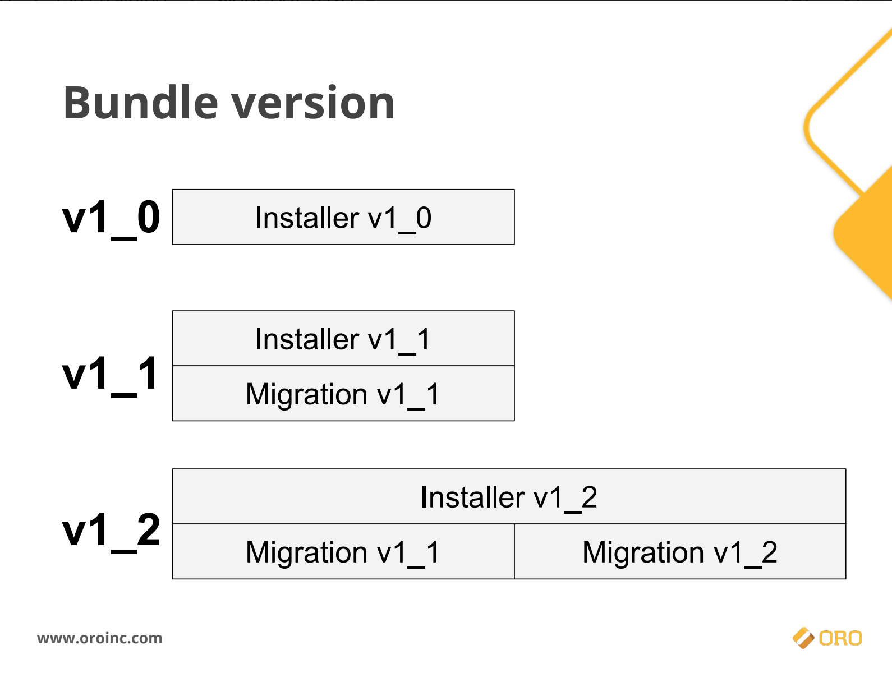

Il y a 2 types de migrations dans Oro :
- Migrations Schema
- Migrations Data
Doc. Oro : https://github.com/oroinc/platform/tree/master/src/Oro/Bundle/MigrationBundle
Nous vous conseillons de suivre le cours “Entities and their data” d’OroInc qui vous apprendra en détails les méthodes et bonnes pratiques pour faire eds migrations dans OroPlatform : https://oroinc.com/oro-fundamentals-online-course/
Extrait : 
1. Migrations Schema
Modification de schéma Doctrine => DBAL
- Pas d’utilisation d’entité/ORM dans le schéma
1.1. implémentation de l’interface Installation
utilise des numéros de versions (=> getVersion())
/!\ regroupement de l’ensemble des migrations pour créer le schéma
=> cf Schéma de Yevhen
1.2. implémentation de l’interface Migration
/!\ quand on ajoute une Migration, il faut systématiquement :
- ajouter la migration dans l’installation en adaptant le schéma désiré
- changer le numéro de version
1.3. Cas spécifiques : champs non null
utilisation des “OrderedMigration” => getOrder():int
Ex : ajout champ UNIQUE + NOT NULL
migration A avec
up()methodealterTable()avec ajout de la colonne déclarée enNULL=> ajout addPostQuery() migration B avecup()methodealterTable()avec ajout de la colonneNOTNULL
1.4. Cas spécifiques : modification de colonne existante
utilisation de requêtes .SQL avec la méthode addPostQuery()
1.5. Cas spécifiques : Oro options
Utilisation de “Oro_Options”
1.6. Cas spécifiques : OroConfigField
OroConfigField uniquement pour les entités crées par ce bundle
1.7. Cas spécifiques : entity extend
Implements : ExtendExtensionInterface
1.8. Cas spécifiques : dépendance des migrations
utilisation des “DependentMigration”
2. Migrations Data
Migration pour créer de la donnée.
Exécuter après les migrations de schéma => ORM
Usage : initialiser une environnement avec des données
/!\ Si Schema est mis a jour, il faut impacter les migrations de data
3. Nomenclature des migrations
3.1. Installer
Format : {nom_du_bundle}Installer
ex : KibokoBarcodeBundleInstaller
3.2. Migration
Le nom de la migration doit correspondre au fonctionnel de la migration. Si le domaine est différent, on créé des fichiers différents par domaine.
ex : AddBudgetMigration ou FixProductsNorms
4. Tests pour vérifier la migration
bin/console oro:platform:update --forcebin/console oro:migration:load(si fixture en plus demain)bin/console oro:entity-extend:cache:clear=> si erreur, PR refusée
(prochainement ajouté à la CI)